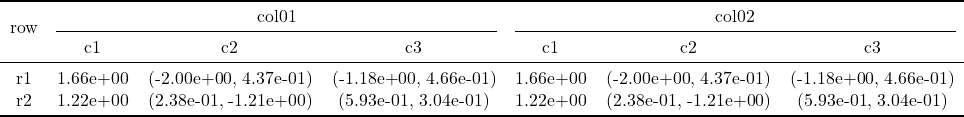
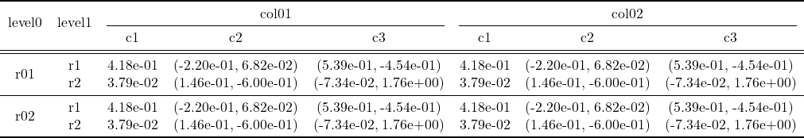
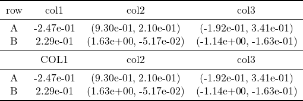
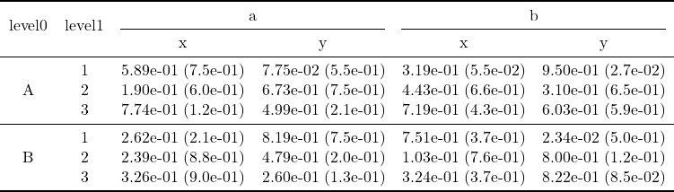
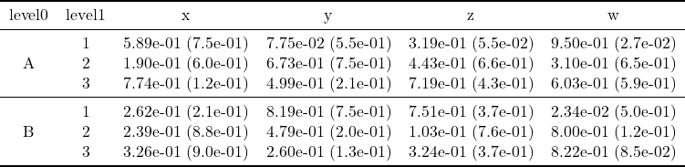
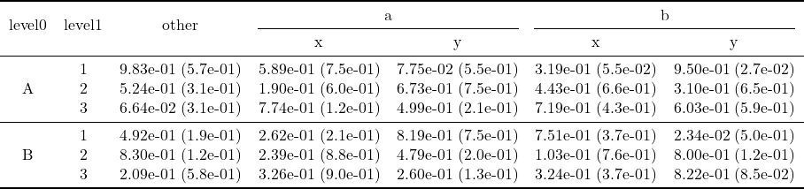
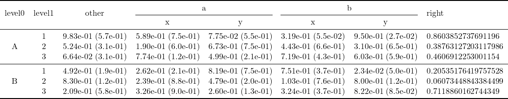
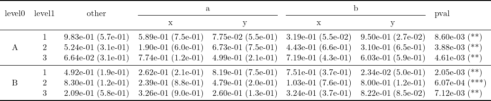
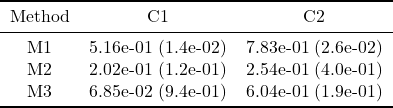

Two-level Columns
a = randn(2)
b = [randn(2) for i = 1:2, j = 1:2]
A = hcat(a, b)
B = hcat(A, A)
print2tex(B, ["r1", "r2"], ["col01", "col02"], subcolnames = ["c1", "c2", "c3"], file="col2.tex")
tex2png("col2.tex")┌ Info: Downloading
│ source = "https://quicklatex.com/cache3/6e/ql_ff59b283860643fc138c68bade2a566e_l3.png"
│ dest = "col2.png"
│ progress = 1.0
│ time_taken = "0.0 s"
│ time_remaining = "0.0 s"
│ average_speed = "∞ B/s"
│ downloaded = "5.587 KiB"
│ remaining = "0 bytes"
└ total = "5.587 KiB"
By default, the background of PNG images rendered from tex2png is transparent, which may make the table hard to read in some image viewers (e.g., VS Code). As a workaround, you can set the background to "white", but this requires convert to be installed.
tex2png("col2.tex", background = "white")a = randn(2)
b = [randn(2) for i = 1:2, j = 1:2]
A = hcat(a, b)
B = hcat(A, A)
C = [B, B]
print2tex(C, ["r01", "r02"], ["col01", "col02"], subcolnames = ["c1", "c2", "c3"], subrownames = ["r1", "r2"], colnames_of_rownames = ["level0", "level1"], file="row2col2.tex")
tex2png("row2col2.tex")┌ Info: Downloading
│ source = "https://quicklatex.com/cache3/b4/ql_962dee120e3b9a476d4532e069af5bb4_l3.png"
│ dest = "row2col2.png"
│ progress = 1.0
│ time_taken = "0.0 s"
│ time_remaining = "0.0 s"
│ average_speed = "∞ B/s"
│ downloaded = "10.112 KiB"
│ remaining = "0 bytes"
└ total = "10.112 KiB"
Share rownames: combine two tables
a = randn(2)
b = [randn(2) for i = 1:2, j = 1:2]
A = hcat(a, b)
A2 = hcat(a, b)
print2tex(A, ["A", "B"], ["col1", "col2", "col3"], A2 = A2, colnames2 = ["COL1", "col2", "col3"], file = "ex02.tex")
tex2png("ex02.tex")┌ Info: Downloading
│ source = "https://quicklatex.com/cache3/cd/ql_00a123264e4ba5fa25b316c63970f6cd_l3.png"
│ dest = "ex02.png"
│ progress = 1.0
│ time_taken = "0.0 s"
│ time_remaining = "0.0 s"
│ average_speed = "∞ B/s"
│ downloaded = "7.474 KiB"
│ remaining = "0 bytes"
└ total = "7.474 KiB"
Two-level rows and Two-level columns
μ = [rand(3, 4), rand(3, 4)]
σ = [rand(3, 4), rand(3, 4)]
print2tex(μ, σ, ["A", "B"], ["a", "b"], ["1","2","3"], ["x", "y"], file = "ex1.tex")
tex2png("ex1.tex")noc = 0
┌ Info: Downloading
│ source = "https://quicklatex.com/cache3/30/ql_5053cea1bc3b727beafe7c7491a09430_l3.png"
│ dest = "ex1.png"
│ progress = 1.0
│ time_taken = "0.0 s"
│ time_remaining = "0.0 s"
│ average_speed = "∞ B/s"
│ downloaded = "10.696 KiB"
│ remaining = "0 bytes"
└ total = "10.696 KiB"
If there is only one level column, we can pass an empty string [""] for the first level column name.
print2tex(μ, σ, ["A", "B"], [""], ["1","2","3"], ["x", "y", "z", "w"], file = "ex1r.tex")
tex2png("ex1r.tex")noc = 0
┌ Info: Downloading
│ source = "https://quicklatex.com/cache3/bc/ql_128c85f49f96fa432bbad89b87c2bebc_l3.png"
│ dest = "ex1r.png"
│ progress = 1.0
│ time_taken = "0.0 s"
│ time_remaining = "0.0 s"
│ average_speed = "∞ B/s"
│ downloaded = "10.340 KiB"
│ remaining = "0 bytes"
└ total = "10.340 KiB"
We can add superscript, such as the rank, for each cell with the argument rank_sup.
rk = [hcat([sortperm(sortperm(x)) for x in eachcol(μ[1])]...),
hcat([sortperm(sortperm(x)) for x in eachcol(μ[2])]...)]
print2tex(μ, σ, ["A", "B"], [""], ["1","2","3"], ["x", "y", "z", "w"], file = "ex1rank.tex", rank_sup = rk)
tex2png("ex1rank.tex")noc = 0
┌ Info: Downloading
│ source = "https://quicklatex.com/cache3/9d/ql_62548f9d6574b129e7fb9a1aa6bbeb9d_l3.png"
│ dest = "ex1rank.png"
│ progress = 1.0
│ time_taken = "0.0 s"
│ time_remaining = "0.0 s"
│ average_speed = "∞ B/s"
│ downloaded = "12.797 KiB"
│ remaining = "0 bytes"
└ total = "12.797 KiB"Add columns on the left
others = [rand(3, 1), rand(3, 1)]
others_σ = [rand(3, 1), rand(3, 1)]
print2tex(μ, σ, ["A", "B"], ["a", "b"], ["1","2","3"], ["x", "y"], file = "ex2.tex", other_cols = others, other_col_names = ["other"], other_cols_σ = others_σ)
tex2png("ex2.tex")noc = 1
┌ Info: Downloading
│ source = "https://quicklatex.com/cache3/47/ql_d4e1ed523756fc25977b0ea9f319db47_l3.png"
│ dest = "ex2.png"
│ progress = 1.0
│ time_taken = "0.0 s"
│ time_remaining = "0.0 s"
│ average_speed = "∞ B/s"
│ downloaded = "13.910 KiB"
│ remaining = "0 bytes"
└ total = "13.910 KiB"
Add columns on the right
right = [[rand(3), rand(3)]]
print2tex(μ, σ, ["A", "B"], ["a", "b"], ["1","2","3"], ["x", "y"], file = "ex3.tex",
other_cols = others,
other_col_names = ["other"],
other_cols_σ = others_σ,
right_cols = right,
right_col_names = ["right"])
tex2png("ex3.tex")noc = 1
┌ Info: Downloading
│ source = "https://quicklatex.com/cache3/9a/ql_1ccf9382b6d7988e04557b4135ddcc9a_l3.png"
│ dest = "ex3.png"
│ progress = 1.0
│ time_taken = "0.0 s"
│ time_remaining = "0.0 s"
│ average_speed = "∞ B/s"
│ downloaded = "16.870 KiB"
│ remaining = "0 bytes"
└ total = "16.870 KiB"
Particularly, if the column is p-value, we can annotate the significance with star symbols, like ?symnum in R.
pval = [star_pval.(right[1] / 100)]
print2tex(μ, σ, ["A", "B"], ["a", "b"], ["1","2","3"], ["x", "y"], file = "ex4.tex",
other_cols = others,
other_col_names = ["other"],
other_cols_σ = others_σ,
right_cols = pval, right_col_names = ["pval"])
tex2png("ex4.tex")noc = 1
┌ Info: Downloading
│ source = "https://quicklatex.com/cache3/53/ql_bee6c491e51b4fcfb22becb2afed5d53_l3.png"
│ dest = "ex4.png"
│ progress = 1.0
│ time_taken = "0.0 s"
│ time_remaining = "0.0 s"
│ average_speed = "∞ B/s"
│ downloaded = "15.954 KiB"
│ remaining = "0 bytes"
└ total = "15.954 KiB"
Reduce to One-Level
μ = [rand(3, 2)]
σ = [rand(3, 2)]
print2tex(μ, σ, [""], [""], ["M1", "M2", "M3"], ["C1", "C2"], colnames_of_rownames = ["Method"], file = "ex5.tex")
tex2png("ex5.tex")noc = 0
┌ Info: Downloading
│ source = "https://quicklatex.com/cache3/e6/ql_a0eca4437c7e3a3c36044f7a735cc2e6_l3.png"
│ dest = "ex5.png"
│ progress = 1.0
│ time_taken = "0.0 s"
│ time_remaining = "0.0 s"
│ average_speed = "∞ B/s"
│ downloaded = "4.233 KiB"
│ remaining = "0 bytes"
└ total = "4.233 KiB"